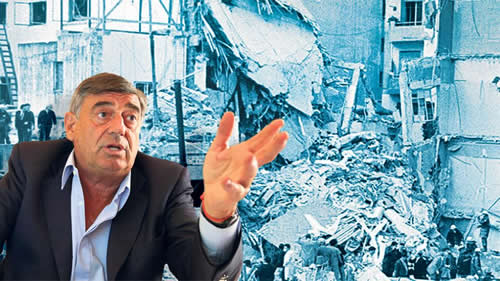

Real Chubut - Agencia de Noticias


"yo le dije al gobierno que no iba a encubrir a nadie"

El ex titular de la Unidad Especial AMIA nombrado por Macri, el radical Mario Cimadevilla, acusó al Presidente de no estar dispuesto a cumplir el compromiso de buscar la verdad sobre el atentado, de proteger a los amigos del Gobierno y de sujetar la investigación a los intereses de EE.UU. e Israel.
En un informe que hasta ahora no se conocía, el radical Mario Cimadevilla acusó al gobierno de Mauricio Macri de intentar convertir la Unidad Especial de Investigación AMIA, que él comandaba, en una "unidad especial de encubrimiento". El documento estaba dirigido al propio Presidente y le señalaba su falta de voluntad e interés por el esclarecimiento del atentado en sí y aludía a los pedidos que había recibido para que la querella del Estado impulsara la absolución de los dos fiscales acusados en el juicio oral por el encubrimiento del ataque terrorista, Eamon Mullen y José Barbaccia, que ahora está en la recta final y podría terminar en marzo. La unidad en cuestión fue disuelta en medio de un escándalo, cuando fueron revocados los poderes de los abogados del Ministerio de Justicia que querían pedir penas para todos los implicados en el juicio sobre las irregularidades en la investigación original. "Le dije a Macri que le agradecía por relevarme de cumplir un compromiso que él no estaba dispuesto a asumir", sintetizó Cimadevilla en diálogo con PáginaI12 el espíritu del escrito, que además deja entrever un interés geopolítico –bajo el mandato de Estados Unidos e Israel– en perpetuar "un manto de dudas" sobre la responsabilidad de los iraníes en el ataque, sin terminar "avanzar a fondo" (ver aparte).
La existencia del documento presentado por Cimadevilla, con un balance de su actividad y su diagnóstico de la situación, fue revelado por el diario Jornada, de Chubut, tierra del ex titular de la Unidad AMIA, antes senador. Este diario accedió al informe completo, que está escrito en términos críticos hacia el Gobierno del que formaba parte. Fue presentado hace casi un año, cuando el Poder Ejecutivo resolvió disolver la repartición especializada, que entre sus tareas tenía la de aportar a la causa madre sobre el atentado, que sigue impune, sin avances, y ejercer la querella estatal en el juicio que está en marcha por el encubrimiento del atentado a través de maniobras en la investigación original, con acusados como Carlos Saúl Menem, Hugo Anzorreguy, el ex juez Juan José Galeano, los fiscales Mullen y Barbaccia, el ex comisario Jorge "Fino" Palacios, el ex titular de la DAIA Rubén Beraja y Carlos Telleldín. Se los acusa básicamente de haber armado una historia falsa para explicar el atentado. De hecho, le pagaron con fondos de la ex SIDE a Telleldín para que acusara a un grupo de policías.
El primer conflicto en torno a este juicio tan relevante quedó a la vista cuando en marzo de 2017 renunció a representar la querella estatal la abogada de la Unidad AMIA Mariana Stilman –designada por sugerencia de Elisa Carrió– después de que le indicaran que debía tener una actitud poco activa en el proceso. Casi un año después, en la Casa Rosada le reprochaban por lo bajo a Cimadevilla que no había hecho lo suficiente para promover el juicio en ausencia (que ahora el establishment de la colectividad judía rechaza) y cuando se acercaba la hora de los alegatos, fueron revocados los mandatos de los abogados que sucedieron a Stilman y que iban a acusar a todos los imputados. En su reemplazo quedó José Console, que integra el tribunal de disciplina de Boca Juniors, con el mandato de no acusar a los ex fiscales Mullen y Barbaccia. Según el texto de Cimadevilla, la unidad iba camino a convertirse en una "unidad de encubrimiento". "Frente a crímenes de esta magnitud no hay derecho al secreto, ni al misterio, ni a la preservación de amigos", dice uno de los tramos del escrito dirigido a Macri.
Otro párrafo agrega: "La investigación del atentado a la AMIA ha quedado amarrada a previas determinaciones de hipótesis de verdad sentadas por flojas decisiones anteriores, que no acusa ingenuidad epistemológica, sino simple inercia, hipocresía, cobardía o directamente complicidad institucional". Luego habla de un "entramado de delitos, negocios y negociados, relaciones malsanas y clandestinas, intereses económicos, estratégicos y diplomáticos" que rodearon al atentado y que, desliza, fueron una constante. Esto lo estaba diciendo, y lo vuelve a decir, la persona que estaba encargada de la Unidad AMIA dentro del ministerio, lo que aumenta su gravedad.
"El documento presentado a Macri habla de un nuevo encubrimiento, porque estábamos en ese momento en medio del juicio sobre el encubrimiento. Se suponía que como querellantes debíamos trabajar para saber la verdad y acusar a quienes tenían responsabilidades. Cuando me vinieron a indicar que pida la absolución de los fiscales, yo les dije que no iba a encubrir a nadie. También me manifestaban preocupación por Palacios, pero en su caso la absolución la pidió el Ministerio Público", relató Cimadevilla a este diario.
–¿Quién le pidió que desligara a los fiscales?
–El ministro Germán Garavano, como ya denuncié. De hecho cuando se enteró que íbamos a acusar a todos, ahí lo traen a Console con intermediación de operadores, fue a la audiencia y pidió la absolución de Mullen y Barbaccia.
Otra parte del escrito dice que eran tantos los obstáculos para avanzar en la investigación del atentado en sí mismo que "fue más difícil acceder a información en poder de los sistemas de inteligencia y seguridad argentinos" que de otros países y "el acceso a expedientes judiciales resultó conflictivo". Relata que armó dos equipos para procesar "la masa documental" (uno focalizado en la reconstrucción del atentado otro en el encubrimiento). Pero "todo el volumen informativo analizado quedó pendiente de la provisión de una herramienta tecnológica que permitiese su entrecruzamiento". Además, añade, "el Gobierno no autorizó la contratación de especialistas ni expertos en algunos de los temas puntuales de análisis y procesamiento".
"Entendíamos –enfatiza Cimadevilla ante este diario– que seguir acumulando papeles sin estrategia de exploración de antecedentes no servía para nada; pedíamos incorporar tecnología. En mayo de 2016 en una reunión en la Corte de La Haya a la que asistió un abogado de la Unidad le explicaron cómo se habían investigado atentados como los de la AMIA en otros lugares y que existen solo dos consultoras con la tecnología necesaria para el entrecruzamiento de datos. Buscamos, sin ningún resultado, reforzar con esa metodología. Además de impulsar el juicio en ausencia para distintos delitos trasnacionales. No conseguimos nada. Del juicio por la voladura de la AMIA no les interesaba nada; el único interés era que no se acusara en la causa de encubrimiento".
En una de las aristas del asesoramiento internacional que describe el documento, se señalan expertos en terrorismo y Medio Oriente que hicieron un estudio de la causa y una propuesta de "reingeniería de la investigación". Uno de los puntos que surgían ponía un signo de interrogación sobre el papel de Irán y Hezbollah.
Sobre el final, se encadenan afirmaciones que abarcan la actuación del aparato judicial y del propio Gobierno: "La actuación del Estado argentino en la investigación está lejos de ser eficaz y efectiva. Todo lo contrario (...) los cientos de vidas destruidas en AMIA no han logrado conmover la indiferencia del Estado, que lejos de investigar y castigar se ha regodeado en una evidente convivencia delictual, hasta extremos promiscuos (...) el análisis de las maniobras de encubrimiento, que adquirieron una dimensión desmesurada, sostiene la hipótesis que se obstruyó la investigación sobre el mecanismo del atentado para proteger y mantener oculto un profuso sustrato de corrupción y sus múltiples relaciones locales". Y sobre esto último, se desprende del texto, el gobierno de Macri estaría edificando un nuevo encubrimiento.
Fuente: Pagina 12